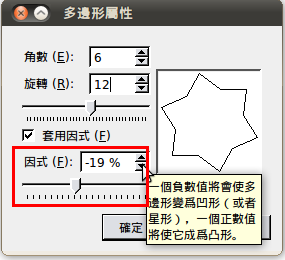
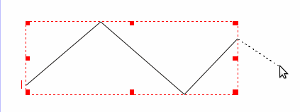
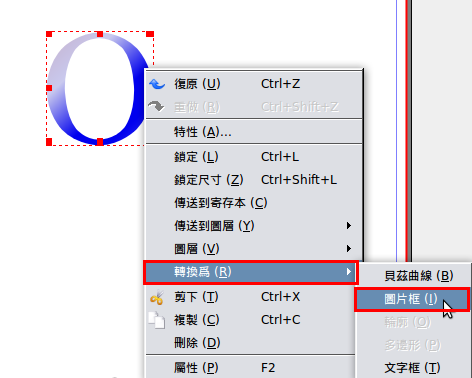
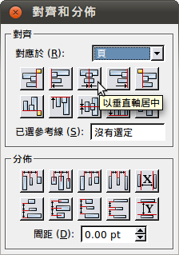
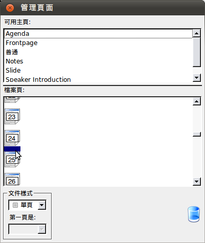

也紀念我們永遠的朋友 李士傑先生（Shih-Chieh Ilya Li）。
用自由軟體 Scribus 來輸出文件（3）-製作活動海報及手冊
自由軟體鑄造場（OSSF） 於本月初（12/02）辦了一場國際交流性質的法律工作坊 －「自由軟體授權應用及商業建議二十講系列之四 － GPL 的授權規則與技術工程遵循之道」。此次的活動海報以及手冊都是利用 Scribus 製作而成，本篇 Scribus 教學將會把重點放在圖形編輯和主頁運用的概念上，並以此次活動海報及手冊來做範本。
多邊形
製作海報需要許多有變化的圖形，以下就介紹 Scribus 做出多邊形的功能。你可以看到工具列上有一個多邊形的圖樣按鈕，旁邊有一個小三角形，按下去然後點選【屬性】。
▲圖1
會跳出以下的視窗。可以依喜好做出想要的多邊形，可以決定多邊形要有幾個角、需要旋轉幾度(圖2、圖3)，還可以改變因式，如圖4。數字負值愈大，做出來的形狀就愈凹；數字正值愈大，形狀就愈膨脹。
▲圖 2
▲圖 3

▲圖 4
接下來，再介紹一個圖形的圓角功能。點選工具列的【視窗】→【屬性】，在「屬性」這個視窗的〔形狀〕下，有一個圓角的功能，使用太多方框會使整張圖給人很硬的感覺，因此可以多利用這個圓角功能。
▲圖 5
貝茲曲線
利用貝茲曲線製作弧線、弧形。首先，點選工具列上的〔插入貝茲曲線〕按鈕。
▲圖 6
如何製作弧線呢？先畫出鋸齒狀，再調整成弧形就行了。只要在想要轉折的地方點滑鼠左鍵就可以畫出鋸齒狀，畫好後點滑鼠右鍵就完成一段鋸齒線段了。

▲圖 7
如果不滿意不需要重新再畫一次，只要選取鋸齒線段快速點擊滑鼠兩下，線段即變成藍色，接著就可以對某個點或是某段線進行調整。
▲圖 8
點兩下的同時，旁邊會跳出一個叫作「節點」的視窗，上面有很多編輯圖形時會用到的按鈕，例如：節點的增減、拉出弧形、更可以將圖形做翻轉、縮放、傾斜變形的動作……等。點兩下的作法也同樣適用於編輯任一個形狀時。
**從【視窗】→【屬性】底下的〔編輯形狀〕按鈕，一樣可以叫出這個視窗。
▲圖 9
這個節點視窗編輯形狀的功能可以說十分地強大，所有的圖形編輯都可以靠它來完成。像是弧線，光是要做出弧線就有兩種方式。先點選視窗中的〔移動控制點〕按鈕，再選擇視窗第二列的前兩個按鈕（如圖 10、圖 11），可依個人需求製作弧線。
▲圖 10
▲圖11
這次的海報底圖就是先拉出一個方框，然後增加節點，當然也可以減少節點，如圖 12。
▲圖 12
再利用之前所說的製作弧線的兩個按鈕，拉短、拉長會產生不同的弧度。
▲圖 13
接著，將剛剛的弧形製作成波浪狀的疊圖。
1.調整好形狀。
2.從【視窗】→【屬性】選擇顏色黑色。
3.調整物件透明度。
▲圖 14
做好之後再利用複製，並依照上述的方法調整弧度，再進行堆疊，就完成底圖的波形物件背景了，如圖 15。
▲圖 15
{kind=link}
文字漸層
Scribus 裡好像找不到「文字漸層」這個按鈕，這個功能只有在編輯圖片的選項中才有，不過只要將文字框轉換成「輪廓」，這個問題就解決了。轉換成功後，文字顏色漸層、文字變形等都可以自己調整了。以下就示範文字漸層的方法。
首先先拖曳出一個文字框，
1.按右鍵【編輯文字】會出現故事編輯器的視窗。
2.編寫文字，選擇字體大小。（字大一點比較好看出漸層喔！）
▲圖 16
調好後先關閉故事編輯器，再按滑鼠右鍵，點選【轉換為】，將「文字框」轉換為「輪廓」，接下來就可以開始調整文字漸層了。
▲圖 17
按右鍵開啟屬性視窗，【顏色】底下有一個寫著「普通」的長方框，點下去底下的每一項都是漸層效果，差別在於漸層方向的不同。
▲圖 18
選擇好其中一個漸層效果後，
1.會跳出一個長方形顏色框，底下的小三角形叫作「顏色節點」，可左右移動顏色節點來改變漸層位置，同時也可以增加或減少顏色節點。
2.選擇其中一個顏色節點，可以在底下選擇顏色。
3.改變顏色外也可以調整透明度和顏色深淺。
▲圖 19
其實除了漸層可以調整外，剛剛在將文字框轉換為輪廓時，就已經把文字轉換成一個可編輯的輪廓框，因此點兩下會跳出「節點」這個視窗，就可以改變文字形狀。
▲圖 20
另外，如果想要再將圖片放在這個文字形狀的框格中，一樣按右鍵選點【轉換為】，將此文字輪廓再轉換成「圖片框」。

▲圖 21
接著就可以插入圖片了。按右鍵點選【匯入影像】，調整好圖片的大小後，便可以做成圖 22 的效果了。
▲圖 22
製作封面
製作手冊並沒有想像中的複雜，一份手冊大部分的頁面版型配置其實大同小異，只差在頁面上內容的不同，此時便可以利用主頁的功能省下不少力氣。這次手冊就是採用大量的「主頁」功能，以下開始介紹「主頁」功能，所以先到【編輯】功能表中的【主頁】。
▲圖23
進入「編輯主頁」視窗，可以看到 4 個按鈕，從左到右依序是〔新增〕、〔複製〕、〔匯入〕以及〔刪除〕。由於「普通」頁面為預設的主頁，所以是不能刪除的。
1. 按〔新增〕主頁按鈕。
2. 輸入新建的主頁名稱，這邊我們取名 「Frontpage」。
▲圖 24
自由軟體鑄造場經費來自國家科學委員會及中央研究院，因此我們也要加上這兩個單位的 Logo 以及我們自由軟體鑄造場自己的 Logo。手冊封面需要放上 4 個的 Logo，所以要加 4 個圖片框。
請點選功能表上的〔新增圖片框〕。前幾期 Scribus 的文章中，除了一個一個拖放出圖片框外，還可以用複製的方式，選定先前已經擺上版面的圖片框。這裡介紹另外一個方法：【物件】→【多重複製】，想要幾個一樣大小的圖片框都可以。
▲圖 25
進入「多重複製」視窗，可以選擇數量，以及複製後新物件要離原先物件多遠。在這邊複製數量選擇 3。由於 我們的物件都是水平對齊，所以「垂直位移」是零，「水平位移」填入 120 pt。複製完後，如圖26，有 3 個新圖片框，整整齊齊的排列。
▲圖 26
將圖片匯入後，單位 Logo 的部份就完成了。接著關閉「編輯主頁」視窗。
▲圖 27
關閉「編輯主頁」視窗後，卻是空白的，到底怎麼回事呢？
▲圖 28
原來我們剛剛所做的動作是在編輯主頁，而「新建檔案」是採用預設的普通主頁，所以必須「套用主頁」，套用剛做的「Frontpage」主頁如圖 29，才會看到我們先前編輯的效果。
進入【頁面】→【套用主頁】。
▲圖 29
我們的第一頁 Logo 就出現了！以後如果要做手冊，可以採用匯入方式匯入先前做好的主頁，把 Frontpage 這個主頁匯入。有另外贊助單位 Logo 的話，再調整就可以了。
▲圖 30
接下來我們要放上本次工作坊的中英文名稱。依照先前學過的加入文字框，加上本次活動的中英文名稱。
▲圖 31
製作內頁
依照前面學到的進入主頁對話視窗，新增主頁「Agenda」，加上本次活動的中英文名稱，以及本頁的主題「Agenda 議程表」。
由於是內頁，得加上頁碼。在頁面底端的中間加上文字框，並且加上代表頁碼的功能變數「＃」。
▲圖 32
插入頁碼。按文字框兩下，確定有游標出現在文字框後，按【插入】→【字元】→【頁碼】。
▲圖 33
由於我們製作的手冊頁數有 10 頁以上，所以代表頁碼的功能變數 ＃ 要插入 2 個，頁碼才會顯示超過兩位數。
Scribus 中有「對齊及分佈」功能，能夠將物件依你想要的對齊方式，所以我們要把有頁碼的文字框放到頁末的中央。【視窗】→【對齊和分佈】。
▲圖 34
在「對齊和分佈」視窗中，頁面上物件有 10 種對應方式可以選用（圖35）：
上排分別為：物件的右邊和錨點的左邊對齊、左邊對齊、以垂直軸居中、右邊對齊、物件的左邊和錨點的右邊對齊；
垂直位置下排：物件的底部和錨點的頂部對齊、頂部對齊、以水平軸居中、底部對齊。
▲圖 35
物件對齊的基準有 6 種可選。
▲圖 36
假如要編排數個物件間的對齊，像是 3 個圖片框兩兩要等距，我們可以用到「分佈」功能。物件與物件之間的分佈，也有 10 種模式可以選（圖37）：
上排為：左邊等距分佈、中間水平等距分佈、右邊等距分佈、讓物件水平間距相等、讓物件水平間距和指定值相等；
下排為：底部等距分佈、中間垂直等距分佈、頂部等距分佈、讓物件垂直間距相等、讓物件垂直間距和指定值相等。
▲圖 37
進入「對齊和分佈」視窗，選擇對應於「頁」。
▲圖 38
「對齊和分佈」視窗，選擇上排左邊數來第三個按鈕，選擇〔以垂直軸居中〕。

▲圖 39
頁碼的功能變數。
▲圖 40
「插入主頁」視窗中，可以選擇插入頁面的頁數，以及插入位置，總共有頁面之前、頁面之後、最後 3 種插入方式。
【頁面】→【插入】，「插入頁面」視窗主頁下拉選單選「Agenda」。
▲圖 41
我們新插入的頁面不但套用先前編輯的主頁，頁末還有頁碼。
▲圖 42
把海報上的表格複製過來，但是表格中的文字並沒有上下置中，所以我們要到「屬性」視窗中手動調整文字對齊方式。在文字距離，頂部填入數值。頁面會隨新填入的數值即時改變。
除了可以調整文字與頂部的距離外，還可以調整文字與邊界的間距，底部、左右邊與文字的距離。
▲圖 43
**如果滑鼠有滾輪可以滾動中鍵增加或減少數值。
▲圖 44
製作講者介紹及議程簡介
複製已經製作好的 Agenda 主頁，拿來修改製作講者介紹及議程簡介。
▲圖 45
從海報及網頁複製講者資訊。在「屬性」視窗中，可以選字型，調整字體大小、行距，字元寬度縮放，字元底線位移、手工追蹤、字元高度縮放。在這邊由於頁面空白處甚多，我們把行距調大。
▲圖 46
用一樣的方式製作議程簡介頁。投影片頁面的配置，放上 2 塊圖片框。
▲圖 47
需要編排的講義各有 33、34、22、12 頁，講義中每頁有 2 張投影片，所以加起來共 51 頁要插入手冊中。
選擇【頁面】→【插入】。
▲圖 48
進入「插入頁面」視窗，主頁選擇 Slide。插入頁面則打上 51 頁。
▲圖 49
前面建立 Slide 主頁時，已經預留一頁放兩張投影片圖片。依照之前幾期介紹的插入圖片功能。圖片很多，可別插入錯圖片噢。
▲圖 50
要把先前做的筆記頁放入各場次最後一張投影片後面。我們這邊要用另外的方法插入新的頁面。【視窗】→【安排頁面】。
▲圖 51
在「管理頁面」視窗中，我們可以看到目前有的頁面，在檔案頁中選擇某頁，即可跳至該頁。
▲圖 52
在可用主頁中，選擇 Notes，再把 Notes 拖曳到欲插入的位置。在這邊是 24 以及 25 頁之間。

▲圖 53
結語
我們的海報及手冊終於完工了，各位有沒有發現 Scribus 真的很好用，可以做這麼多事情。至於要怎麽輸出成影印店能接受的格式，就等各位先將這期的文章好好琢磨過之後，再期待下一期分享如何將做好的檔案輸出成 pdf 格式的文章囉！
您也許有興趣閱讀以下文章:
- 用自由軟體 Scribus 來輸出文件（5）- 文字應用 - 2011-02-21
- 用自由軟體 Scribus 來輸出文件（4）- 製作模板並轉為 PDF 輸出 - 2011-01-05
- 用自由軟體 Scribus 來輸出文件（2）-製作大富翁棋盤 - 2010-11-04
- 用自由軟體 Scribus 來輸出文件（1）-基本操作 - 2010-10-11
專欄總覽


E-Mail：contact@openfoundry.org Address：台北市南港區研究院路2段128號 中央研究院資訊科學研究所 . 隱私權條款. 使用條款

評論
但不知中文字體的支援有改善否
現在到底哪些中文字體在scri bus中可以正確顯示無誤呢
謝謝
kiku你好：
我是本文的作者之一。
老實說Scribus對於東亞雙 字元文字的支援仍不是很完善。
但有些方法可以在Scribus 使用中文。
如果是中文輸入，
在Ubuntu直接輸入會無法顯 示中文字
而Windows環境則是會當掉 。
解決之道是先在文字處理器輸入完 後，
使用複製貼上方式弄到Scrib us上。
可以參考本系列文第一篇的教學:
openfoundry.org/.../...
中文字型顯示的話，
請看圖：
目前使用的中文字型都可以正常顯 示。
不過我是用windows
windows下好像可以正常顯 示的字體很少
我的意思是指讓目錄自動標示出章 節所在的頁數
這樣會需要寫語法嗎?
Scribus讓文件產生目錄， 步驟上有些複雜且不直觀。可以參 考下面的影音教學
showmedo.com/.../...
以及圖文教學 documentation.scribus.net/.../...